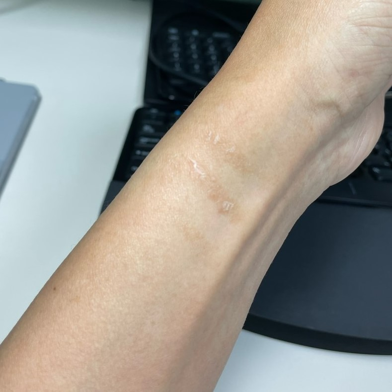
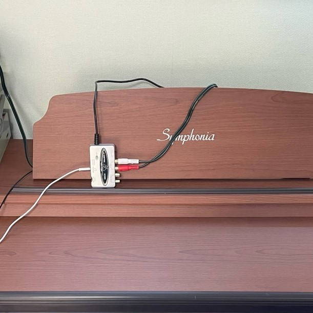
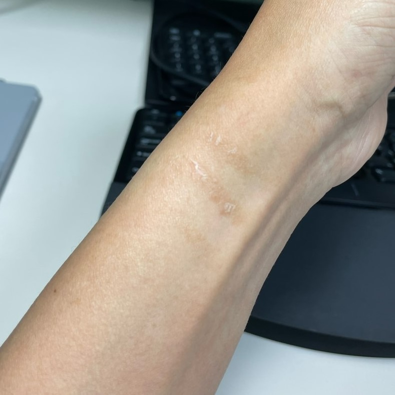
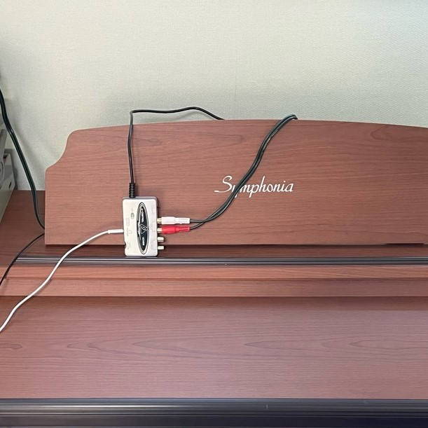

일상이 계속되면 글도 나오지 않는다. 그래서.
26/11/2022
코로나 양성 반응이 나왔다. 근 3년을 별다른 일 없이 지낸터라 내심, 코로나에 걸렸으되 증상 없이 지나갔겠거니 싶었는데 그게 아니었나보다.
아팠다. 코가 나왔다가 기침이 났다가 두통이 몰려오고선 다시 기침이 참을 수 없이 발작적으로 튀어나온다. 확진 후 일주일을 참고 견디면 나아지겠지 란 희망으로 기침과 두통으로 가득찬 불면의 밤을 조용히 하얗게 참아냈는데 열흘이 지난 오늘 다시 병원에 가서 생전 처음 링거를 맞고 왔다.
아팠다. 코가 나왔다가 기침이 났다가 두통이 몰려오고선 다시 기침이 참을 수 없이 발작적으로 튀어나온다. 확진 후 일주일을 참고 견디면 나아지겠지 란 희망으로 기침과 두통으로 가득찬 불면의 밤을 조용히 하얗게 참아냈는데 열흘이 지난 오늘 다시 병원에 가서 생전 처음 링거를 맞고 왔다.
우리 속담에

시간이 그래도 흘러 그러한지 약에 절여저서인지, 오후부턴 인간의 행동을 할 수 있게 되었다. 차마 책을 읽을 정신은 나지 않아 전에 구해 놓았던 오디오 인터페이스를 이용해 전기 피아노 소리를 녹음해 보았다.

분명 예전에 꽤나 오래 연습해서 어느 정도 소리를 낼 줄 안다고 생각했지만 막상 녹음해 놓고 들어보니 내 실력이 이모양이구나를 다시금 느끼게 되었다. 그래도 여러 번 시도해서 그나마 하나 건진 걸 올려 본다. 이 정도 일상에서 벗어난 일이 생겼는데 뒤로 물러날 수는 없지.
길이 멀면 눈썹도 무겁다고 뽑아버린다.란 이야기가 있다. 올해 6월부터 달리기를 위해 산 시계를 심박수나 스트레스 측정을 위해 계속 착용하고 있었다. 그런데 스마트폰 알림이 시계로 울리는 것도 신경쓰여 그것마저 참을 수 없게 되어 벗어 버렸다. 오늘 보니 시계줄에 닿았던 손목 부위가 붉게 일어나다 못해 피부가 벗거진 자국이 보인다.

시간이 그래도 흘러 그러한지 약에 절여저서인지, 오후부턴 인간의 행동을 할 수 있게 되었다. 차마 책을 읽을 정신은 나지 않아 전에 구해 놓았던 오디오 인터페이스를 이용해 전기 피아노 소리를 녹음해 보았다.

분명 예전에 꽤나 오래 연습해서 어느 정도 소리를 낼 줄 안다고 생각했지만 막상 녹음해 놓고 들어보니 내 실력이 이모양이구나를 다시금 느끼게 되었다. 그래도 여러 번 시도해서 그나마 하나 건진 걸 올려 본다. 이 정도 일상에서 벗어난 일이 생겼는데 뒤로 물러날 수는 없지.